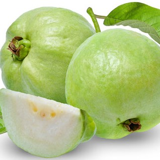

GUAVA
Psidium guajava
Guava (/ˈɡwɑːvə/ GWAH-və)[1] is a common tropical fruit cultivated in many tropical and subtropical regions.[2] The common guava Psidium guajava (lemon guava, apple guava) is a small tree in the myrtle family (Myrtaceae), native to Mexico, Central America, the Caribbean and northern South America.[2] The name guava is also given to some other species in the genus Psidium such as strawberry guava (Psidium cattleyanum) and to the pineapple guava, Feijoa sellowiana. In 2019, 55 million tonnes of guavas were produced worldwide, led by India with 45% of the total. Botanically, guavas are berries.
Apple guava flower
White guava
Types
The most frequently eaten species, and the one often simply referred to as "the guava", is the apple guava (Psidium guajava). Guavas are typical Myrtoideae, with tough dark heavy leaves that are opposite, simple, elliptic to ovate, and 5–15 centimetres (2–6 in) long. The flowers are white, with five petals and numerous stamens. The fruits are many-seeded berries.[3]
Etymology
The term guava appears to have been in use since the mid-16th century.[4] The name derived from the Taíno,[5] a language of the Arawaks as guayabo for guava tree via the Spanish for guayaba.[4] It has been adapted in many European and Asian languages, having a similar form.[2]
Origin and distribution
Guavas originated from an area thought to extend from Mexico, Central America or northern South America throughout the Caribbean region.[2][6][7] Archaeological sites in Peru yielded evidence of guava cultivation as early as 2500 BC.[7]
 Guava was adopted as a crop in subtropical and tropical Asia, parts of the United States (from Tennessee and North Carolina, southward, as well as the west and Hawaii), tropical Africa, and Oceania.[6] Guavas were introduced to Florida, US in the 19th century[2] and are grown there as far north as Sarasota, Chipley, Waldo and Fort Pierce. However, they are a primary host of the Caribbean fruit fly and must be protected against infestation in areas of Florida where this pest is present.[8]
Guava was adopted as a crop in subtropical and tropical Asia, parts of the United States (from Tennessee and North Carolina, southward, as well as the west and Hawaii), tropical Africa, and Oceania.[6] Guavas were introduced to Florida, US in the 19th century[2] and are grown there as far north as Sarasota, Chipley, Waldo and Fort Pierce. However, they are a primary host of the Caribbean fruit fly and must be protected against infestation in areas of Florida where this pest is present.[8]
 Guavas are cultivated in several tropical and subtropical countries.[2][6] Several species are grown commercially; apple guava and its cultivars are those most commonly traded internationally.[2] Guavas also grow in southwestern Europe, specifically the Costa del Sol on Málaga, (Spain) and Greece where guavas have been commercially grown since the middle of the 20th century and they proliferate as cultivars.[6] Mature trees of most species are fairly cold-hardy and can survive temperatures slightly colder than −4 °C (25 °F) for short periods of time, but younger plants will likely freeze to the ground.[9]
Guavas are of interest to home growers in subtropical areas as one of the few tropical fruits that can grow to fruiting size in pots indoors. When grown from seed, guava trees can bear fruit in two years, and can continue to do so for forty years.[2]
'Thai maroon' guava, a red apple guava cultivar
Ecology
Psidium species are eaten by the caterpillars of some Lepidoptera, mainly moths like the Ello Sphinx (Erinnyis ello), Eupseudosoma aberrans, E. involutum, and Hypercompe icasia. Mites, like Pronematus pruni and Tydeus munsteri, are known to be crop pests of the apple guava (P. guajava) and perhaps other species.[2] The bacterium Erwinia psidii causes rot diseases of the apple guava.[10]
The fruit is cultivated and favored by humans, and many other animals such as birds consume it, readily dispersing the seeds in their droppings. In Hawaii, strawberry guava (P. littorale) has become an aggressive invasive species threatening extinction to more than 100 other plant species.[11][12] By contrast, several guava species have become rare due to habitat destruction and at least one (Jamaican guava, P. dumetorum), is already extinct.
Guava wood is used for meat smoking in Hawaii, and is used at barbecue competitions across the United States. In Cuba and Mexico, the leaves are used in barbecues.
Fruit
Guava fruits, usually 4 to 12 centimetres (1+1⁄2 to 4+1⁄2 in) long, are round or oval depending on the species.[2] They have a pronounced and typical fragrance, similar to lemon rind but less sharp. The outer skin may be rough, often with a bitter taste, or soft and sweet. Varying between species, the skin can be any thickness, is usually green before maturity, but may be yellow, maroon, or green when ripe. The pulp inside may be sweet or sour and off-white ("white" guavas) to deep pink ("red" guavas). The seeds in the central pulp vary in number and hardness, depending on species.[2]
Guavas are cultivated in several tropical and subtropical countries.[2][6] Several species are grown commercially; apple guava and its cultivars are those most commonly traded internationally.[2] Guavas also grow in southwestern Europe, specifically the Costa del Sol on Málaga, (Spain) and Greece where guavas have been commercially grown since the middle of the 20th century and they proliferate as cultivars.[6] Mature trees of most species are fairly cold-hardy and can survive temperatures slightly colder than −4 °C (25 °F) for short periods of time, but younger plants will likely freeze to the ground.[9]
Guavas are of interest to home growers in subtropical areas as one of the few tropical fruits that can grow to fruiting size in pots indoors. When grown from seed, guava trees can bear fruit in two years, and can continue to do so for forty years.[2]
'Thai maroon' guava, a red apple guava cultivar
Ecology
Psidium species are eaten by the caterpillars of some Lepidoptera, mainly moths like the Ello Sphinx (Erinnyis ello), Eupseudosoma aberrans, E. involutum, and Hypercompe icasia. Mites, like Pronematus pruni and Tydeus munsteri, are known to be crop pests of the apple guava (P. guajava) and perhaps other species.[2] The bacterium Erwinia psidii causes rot diseases of the apple guava.[10]
The fruit is cultivated and favored by humans, and many other animals such as birds consume it, readily dispersing the seeds in their droppings. In Hawaii, strawberry guava (P. littorale) has become an aggressive invasive species threatening extinction to more than 100 other plant species.[11][12] By contrast, several guava species have become rare due to habitat destruction and at least one (Jamaican guava, P. dumetorum), is already extinct.
Guava wood is used for meat smoking in Hawaii, and is used at barbecue competitions across the United States. In Cuba and Mexico, the leaves are used in barbecues.
Fruit
Guava fruits, usually 4 to 12 centimetres (1+1⁄2 to 4+1⁄2 in) long, are round or oval depending on the species.[2] They have a pronounced and typical fragrance, similar to lemon rind but less sharp. The outer skin may be rough, often with a bitter taste, or soft and sweet. Varying between species, the skin can be any thickness, is usually green before maturity, but may be yellow, maroon, or green when ripe. The pulp inside may be sweet or sour and off-white ("white" guavas) to deep pink ("red" guavas). The seeds in the central pulp vary in number and hardness, depending on species.[2]